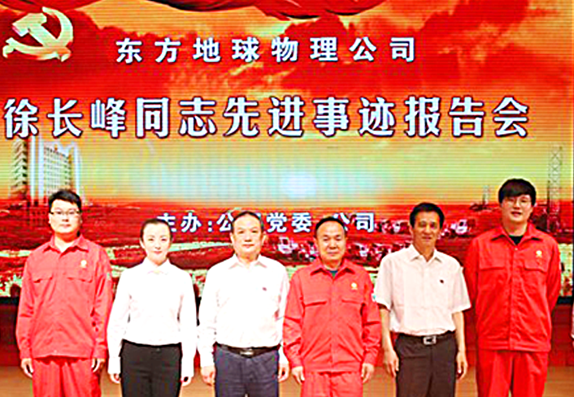
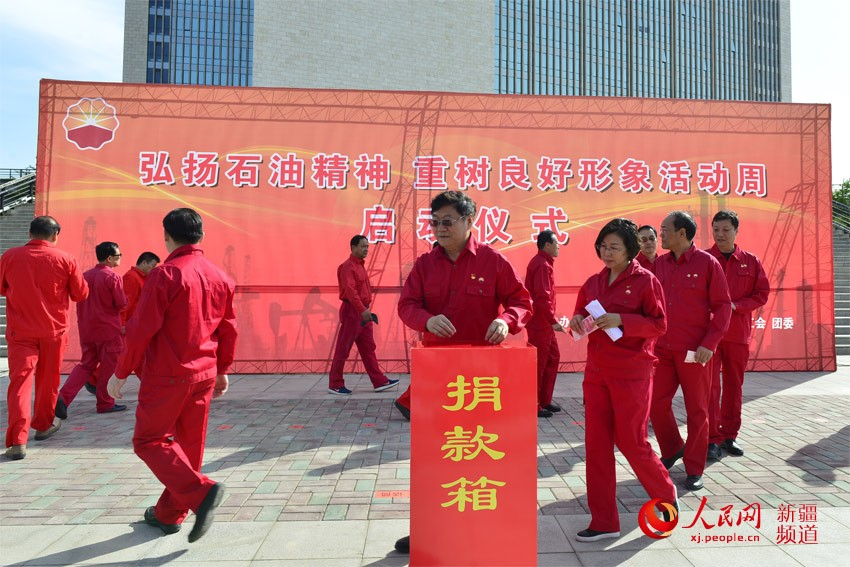

党建要闻
四合格四诠释
党规党纪
基层秀
数据党建

【东方物探党委】践行四合格四诠释，举办徐长峰同志先进事迹报告会
【东方物探党委】践行四合格四诠释，举办徐长峰同志先进事迹报告会
【东方物探党委】践行四合格四诠释，举办徐长峰同志先进事迹报告会
【东方物探党委】践行四合格四诠释，举办徐长峰同志先进事迹报告会
【东方物探党委】践行四合格四诠释，举办徐长峰同志先进事迹报告会
【东方物探党委】践行四合格四诠释，举办徐长峰同志先进事迹报告会
【长城钻探党委】深入学习 十八届六中全会精神 凝心聚力 促发展
2017/6/30 14:34

【石油工业出版社有限公司党 委】扎实组织“弘扬石油精神 重塑良好形象”活动周活动
2017/6/30 14:34
【北京寰球工程公司党委】探 索项目党建工作新思路
2017/6/29 14:34